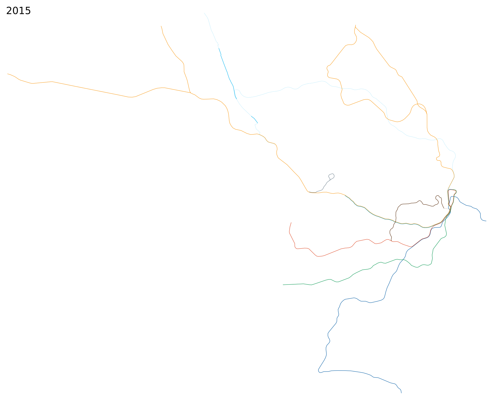
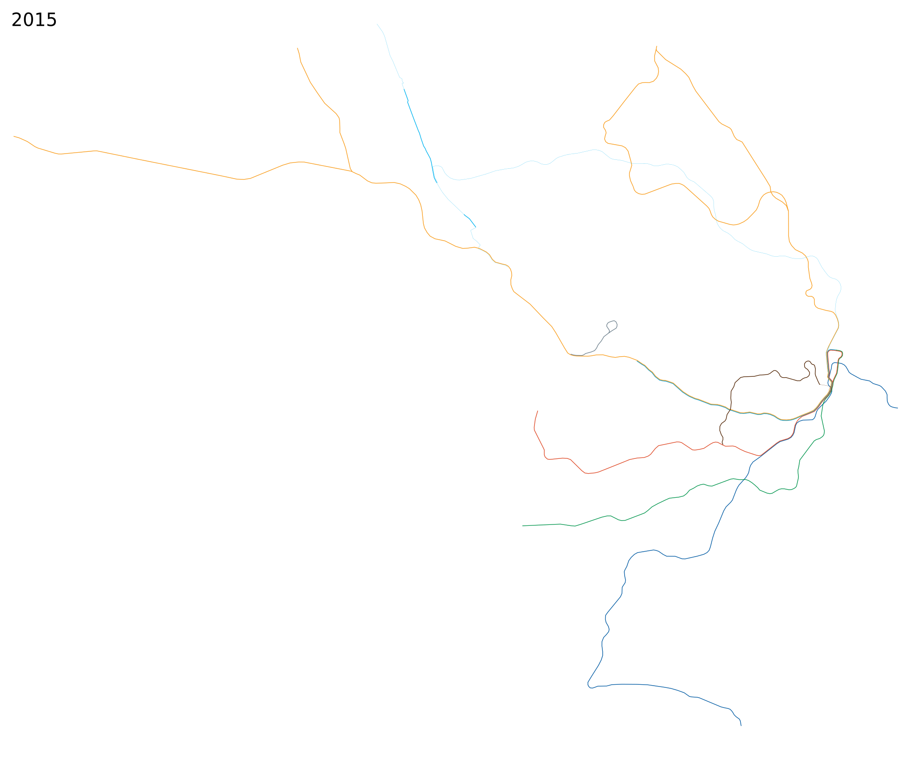

Sydney
 Adelaide
 Perth
Perth Brisbane
Brisbane Auckland
Auckland
Melbourne
Sydney

Adelaide
Perth
Brisbane
Auckland
five years earlier (or press a) ---
five years later (or press s)
click here to animate
Based on frequent midday service at the end of the year in question (notes).
Scale: = 10 km (10 CSS pixels per km)
Please send any corrections or questions to threestationsquare at gmail dot com.